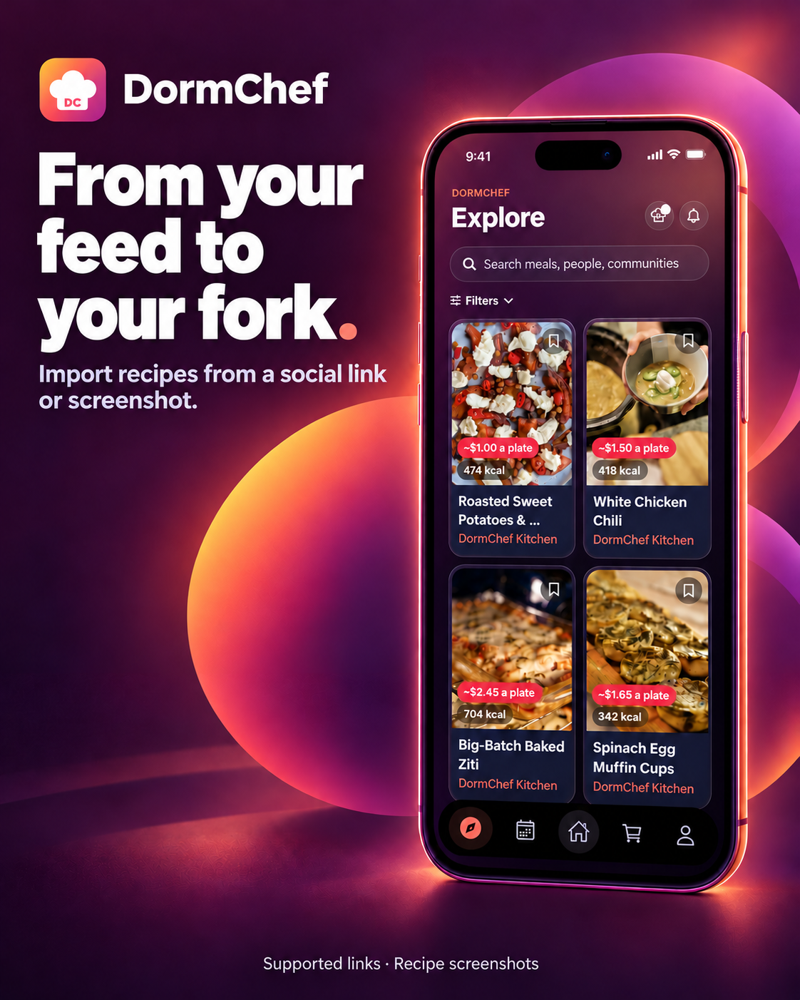
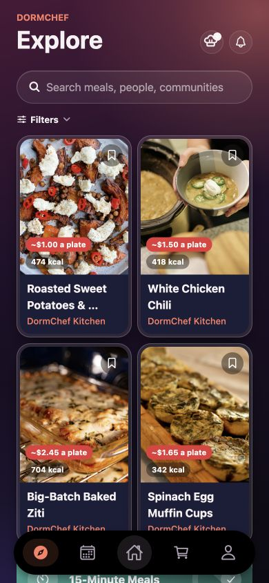
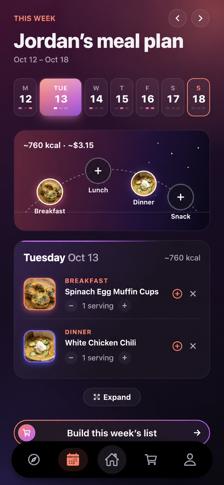
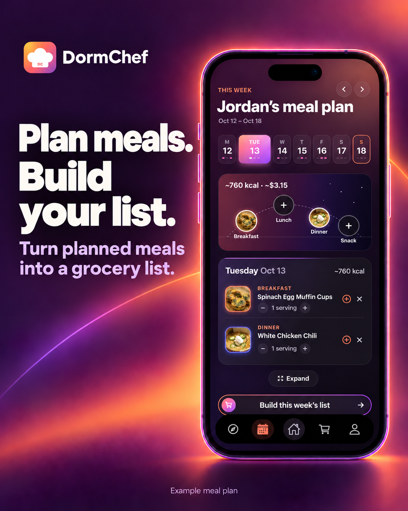
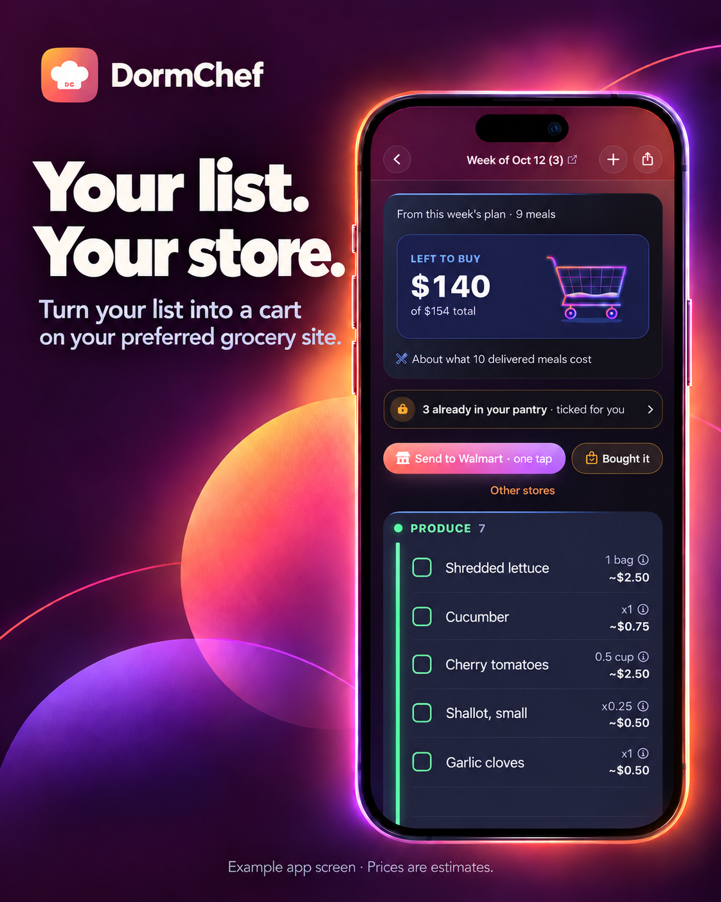

01 / DISCOVER & IMPORTKeep the recipe.
Keep the recipe.
Lose the searching.
Import from a supported link or a screenshot with recipe details. Save the meals you want to make.
MADE FOR STUDENT LIFE
Recipes you want.
Meals you plan. Groceries that follow.
Import a recipe, plan your week, and build your grocery list. One place to make “what should I eat?” easier.
Take a look Follow our progress ↗

LESS FRICTION. MORE GOOD FOOD.
Bring the food you save online into the week you actually live.

Import from a supported link or a screenshot with recipe details. Save the meals you want to make.

Choose what you want to eat, add it to your plan, and build a list directly from those meals.

See what you need and an estimated cost. Use your list’s shopping options to continue with a retailer.
App screens are examples. Prices are estimates. Shopping options vary by retailer.
LIFE IN A SHARED KITCHEN
Roommates can combine grocery lists for a shared shopping run. Keep everyone’s ingredients in view.
Your meals → A shared listPULL UP A CHAIR
We’re building DormChef with student feedback. Leave your email for product updates.
@dormchef_official ↗A FEW DETAILS
DormChef helps students discover or import recipes, plan meals, and build an organized grocery list from their plan.
Yes. Use a supported recipe or social link, or scan a screenshot containing readable recipe details. Some links hide the recipe behind a login or contain only video; a recipe screenshot is the alternative.
Build a list directly from planned meals. Ingredients are combined and grouped by category, with estimated costs to help you prepare for shopping.
Use the shopping options in your grocery list to take it to a retailer. Supported transfers and item availability vary by store. Review matches and final prices on the retailer’s site before checkout.
Prices shown are estimates, not store quotes. They vary by store, pack size and availability; the retailer sets the final checkout total.
Leave your email for product updates, or follow @dormchef_official on Instagram. We are preparing DormChef with a small group of student testers.